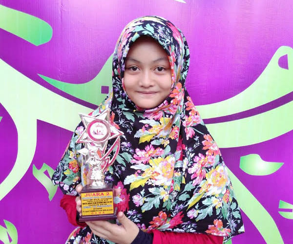

Kisti, Hafidz Muda yang Bersahaja
Padang (10/5) Kota Padang bergiat membangun para generasi muda dengan iman dan takwa. Pada awal Mei, setidaknya terdapat dua perlombaan tahfidz Alquran. Program pemerintah kota ini selaras dengan program Tri Sukses generasi penerus LDII, untuk mewujudkan generasi muda yang faqih agama, berakhlak mulia, dan mandiri.
Salah satu pemudi LDII, Kisti Ananda, kampiun di dua perlombaan tahfidz sekaligus. Ia meraih juara satu lomba tahfidz Alquran tingkat SMP/MTS sekota Padang dalam acara “Gebyar PGAI” yang diadakan pada Selasa, 3 Mei lalu dan juara dua lomba tahfidz tingkat SMP/MTS sekota Padang dalam “Tenlicious III” yang diadakan SMAN 10 Padang pada Jumat, 5 Mei lalu.
Putri pasangan Imron dan Yunelva ini boleh berbangga hati. Pasalnya, dia memiliki pemahaman yang baik, bahwa menjuarai perlombaan atau memenangi piala bukanlah tujuan utama untuk menghafal Alquran.
Namun, menurutnya ia berniat mempersembahkan mahkota bagi kedua orangtuanya di akhirat nanti. Niat yang luhur nan bersahaja ini menjadi keyakinan remaja kelahiran 3 Oktober 2002. Ia ingat benar hadist, bahwa orang tua yang mempunyai anak yang hafal dan mengamalkan Alquran, maka Allah menghadiahkan mahkota. “Inilah yang menjadi motivasi utama saya untuk mulai menghafal Alquran,” ujar Kisti.
Sebelumnya, Kisti juga sudah pernah memenangkan lomba serupa, namun dalam kategori grup. Barulah, sejak awal tahun 2015 dia bertekad untuk menghafal Alquran dan semakin termotivasi setelah mengetahui keutamaan yang didapat bagi orangtuanya. Menurutnya untuk menghafal Alquran tentulah tidak mudah. Dibutuhkan niat yang lurus, motivasi, dan komitmen.
“Memang tidak mudah untuk menghafal Alquran juga tidak mudah untuk selalu mempertahankan hafalan agar tidak lupa. Umi, papa, abang, kakak, dan adik selalu memberikan motivasi,” ujar Kisti. Yang ia lakukan setiap hari adalah menghafal dan mengulang hafalan setiap hari pada saat jeda Maghrib ke Isya. Hasilnya, di akhir 2015 ia sudah hafal juz 30, begitu penuturan Kisti yang bersekolah di kelas VIII SMPN 30 Padang ini.
Banyak yang mempunyai keinginan untuk menghafal Alquran namun tak banyak yang memulainya. Sesuatu yang tidak dimulai, tidak akan pernah selesai. Jadi, yang pertama tetapkanlah niat kemudian mulailah membuat perencanaan jumlah ayat yang dihafal setiap hari dan tetapkan metode hafalannya. Jika sudah diniati, dan dijalankan Insya Allah akan berbuah hasil. Tidak hanya akan mendapatkan piala, namun yang utama mahkota bagi orangtua. (M. Iqbal/LINES)